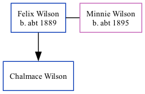

Felix Wilson c1889 -
[ Home ] | [ Surnames Index ] | [ Family History ] was born in Missouri c. 18891,2. He had 1 surviving child with Minnie Wilson: Chalmace G.
During his life, he was living in Winner, Tripp, South Dakota in 19201 and in 19302.
Children
- Chalmace G
Citations
- 1920 United States Federal Census Ancestry.com Operations Inc (Age: 31; Marital Status: Married)
- 1930 United States Federal Census Ancestry.com Operations Inc (Age: 41; Marital Status: Married; Relation to Head of House: Head)
Family Tree
Data (GEDCOM) maintained by Jay Weston Hannah, Omaha, Nebraska, USA.
Website generated by ged2site. Last updated on Jun 18, 2024.